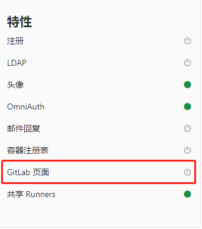

Runner
安装 Runner
添加 GitLab 官方仓库：
# For RHEL/CentOS/Fedora
curl -L https://packages.gitlab.com/install/repositories/runner/gitlab-runner/script.rpm.sh | sudo bash
安装最新版本的GitLab Runner，或跳到下一步骤安装指定版本
# For RHEL/CentOS/Fedora
sudo yum install gitlab-runner
安装特定版本的GitLab Runner
# for RPM based systems
yum list gitlab-runner --showduplicates | sort -r
sudo yum install gitlab-runner-10.0.0-1
注册Runner
Runner 有五种类型：
- shared - 执行所有未分配项目的作业
- group - 执行所在组所有未分配项目的作业
- specific - 执行已分配项目的作业
- locked - Runner不能分配给其他项目
- paused - Runner不能接收任何新作业
注册共享Runner
管理员账号才能注册共享Runner，且仅能注册一个。
在 admin/runners页上获取共享Runner token

注册操作
注册完成后，admin/runners页面看到runner记录

添加子域名(泛域名解析)
在服务器上添加域名解析，如阿里云等
*.page.xxx.com 192.168.22.23
配置好后，用户可通过username.page.xxx.com访问pages
修改gitlab配置文件
vi /etc/gitlab/gitlab.rb
pages_external_url "http://page.xxx.com"
gitlab_pages['enable'] = true
执行gitlab重配置、重启命令:
gitlab-ctl reconfigure
gitlab-ctl restart
配置成功，则admin页面上的 GitLab Pages项处于启用状态

编写 .gitlab-ci.yml 文件
项目需要使用Pages功能时，在根目录下添加并填写 .gitlab-ci.yml 文件。
注册流程
执行下面命令：
[root@kz gitlab]# gitlab-runner register
输入GitLab实例URL（admin/runner页中的链接）：
[root@kz gitlab]# gitlab-runner register
Runtime platform arch=amd64 os=linux pid=14694 revision=ac2a293c version=11.11.2
Running in system-mode.
Please enter the gitlab-ci coordinator URL (e.g. https://gitlab.com/):
http://47.110.228.131/
输入token（admin/runners页上获取）:
Please enter the gitlab-ci token for this runner:
D3s24_Nsx4HoABtA19yfSBkd
输入Runner描述，后续可在页面上修改
Please enter the gitlab-ci description for this runner:
[iZbp19xg5vv2b5wnt0avavZ]: shared-runner
输入Runner标签，后续可在GitLab平台修改
Please enter the gitlab-ci tags for this runner (comma separated):
shared
Registering runner... succeeded runner=D_Nsx4Ho
选择执行器
不确定选择哪个就选择 shell
Please enter the executor: docker, virtualbox, docker+machine, docker-ssh+machine, docker-ssh, parallels, shell, ssh, kubernetes:
shell
全部脚本：
[root@kz gitlab]# gitlab-runner register
Runtime platform arch=amd64 os=linux pid=15281 revision=ac2a293c version=11.11.2
Running in system-mode.
Please enter the gitlab-ci coordinator URL (e.g. https://gitlab.com/):
http://47.110.228.131/
Please enter the gitlab-ci token for this runner:
D3s24_Nsx4HoABtA19yfSBkd
Please enter the gitlab-ci description for this runner:
[iZbp19xg5vv2b5wnt0avavZ]: ob-shared-runner
Please enter the gitlab-ci tags for this runner (comma separated):
shared
Registering runner... succeeded runner=D_Nsx4Ho
Please enter the executor: docker, virtualbox, docker+machine, docker-ssh+machine, docker-ssh, parallels, shell, ssh, kubernetes:
shell
Runner registered successfully. Feel free to start it, but if it's running already the config should be automatically reloaded!